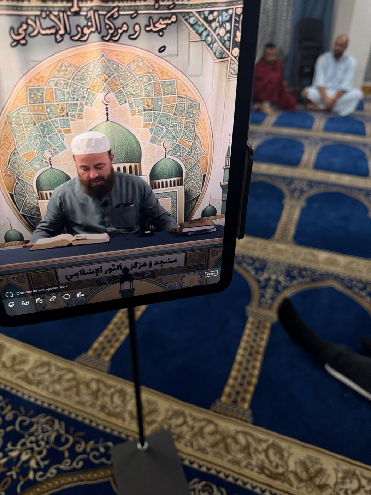
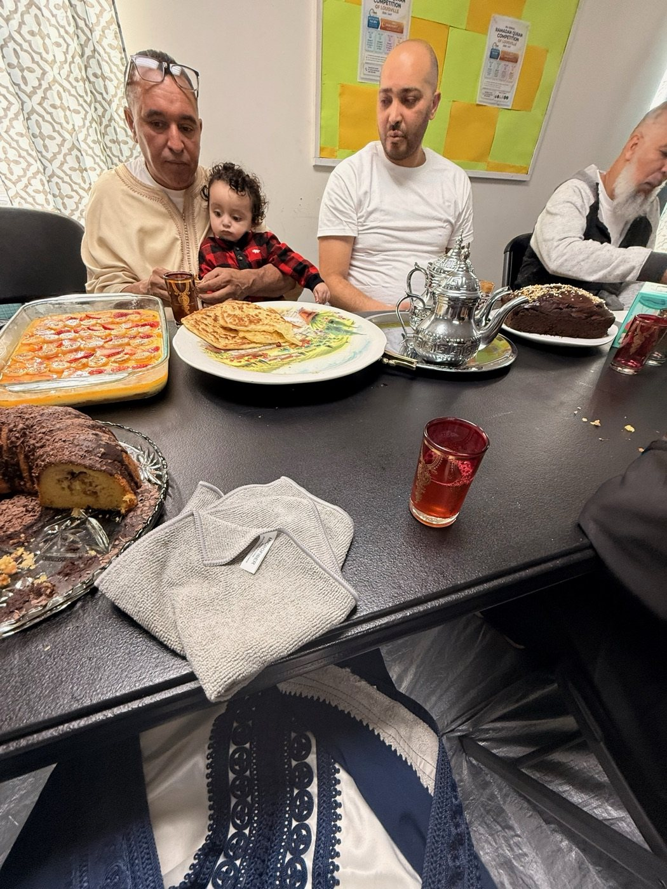
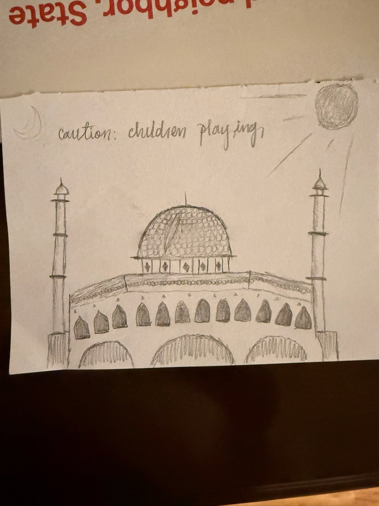
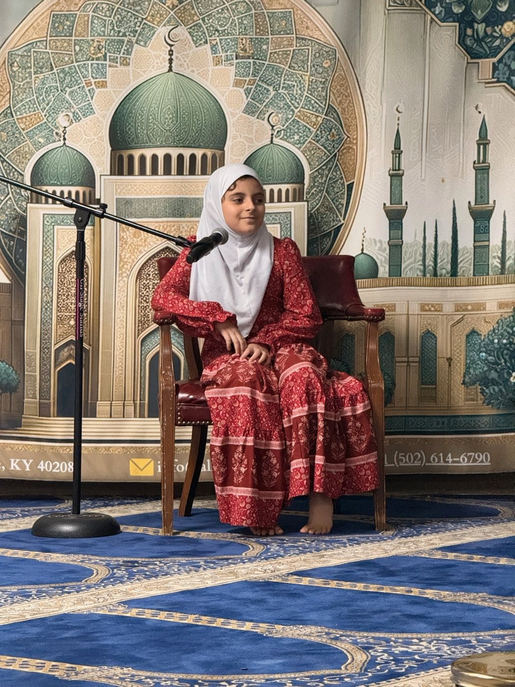
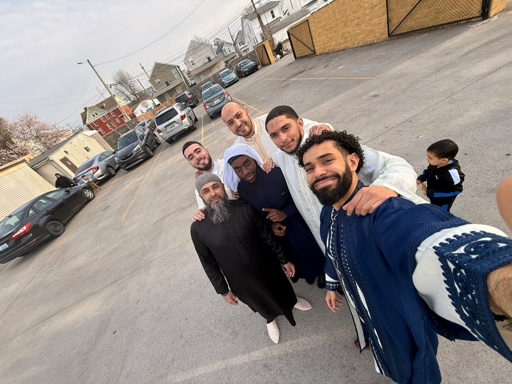
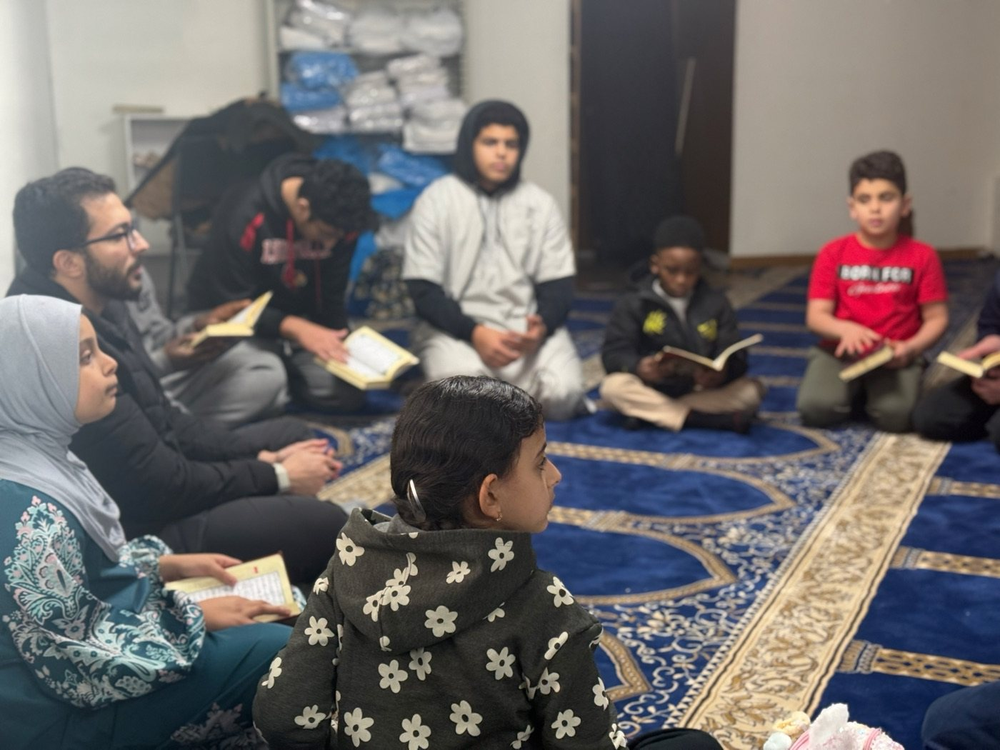

Basic Life Support Course
Community safety education and practical training.
Community meals, beneficial lessons, youth programs, and gatherings that show what life at Alnur looks like.
These approved photos come from the living Alnur gallery. Newer moments appear more often on the homepage while older memories remain part of the story.






These named events remain part of Alnur's story. Available recordings and reminders can be found on the masjid's YouTube channel.
Community safety education and practical training.
A focused learning series with community discussion and available recordings.
A welcoming outreach event for neighbors, visitors, and the broader community.
Visit Alnur's YouTube channel for available recordings and reminders, or see the current events page for what is happening next.